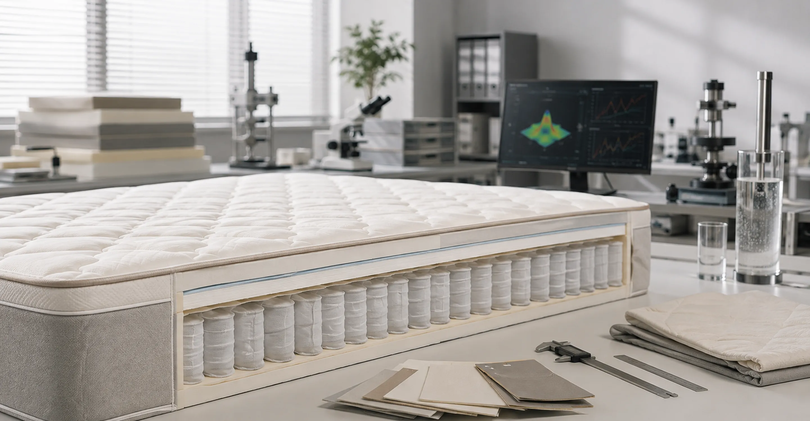
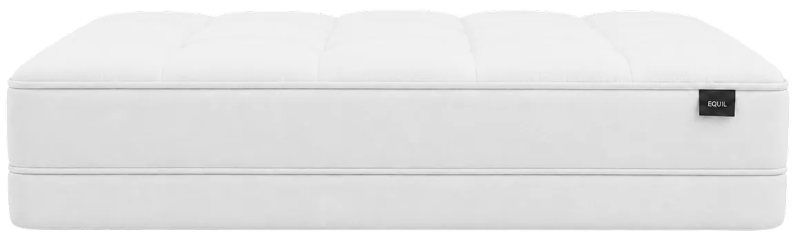
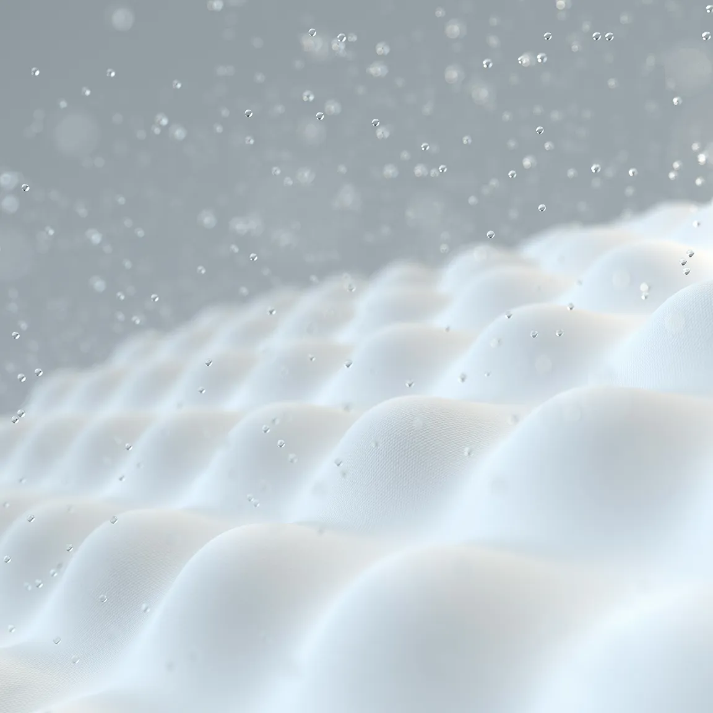

01
Dense Weave
촘촘하게 짜인 원단 조직이
미세입자의 내부 침투를 줄이도록 설계되었습니다.

계절에 따라 달라지는 온도와 습도를 고려해,
언제나 쾌적하고 포근한 잠을 위한 침구를 만들었습니다.
RESEARCH & ENGINEERING
EQUIL은 소재를 단순히 여러 겹 쌓지 않습니다.
몸의 압력과 움직임, 폼의 탄성, 스프링의 반응과 표면 소재를 함께 검토해 각 레이어가 정확한 역할을 수행하도록 설계하였습니다.
EQUIL의 매트리스는 정밀한 4중 구조로 이어집니다.

촘촘하게 짜인 원단 조직이
미세입자의 내부 침투를 줄이도록 설계되었습니다.
수면 중 발생하는 땀과 습기를 빠르게 흡수하고 배출해
매트리스 표면이 눅눅해지는 것을 줄이도록 설계했습니다.
매일 피부와 맞닿는 표면의 마찰과 촉감을 고려해
부드럽고 편안하게 닿는 커버 소재를 적용했습니다.

사람마다 필요한 지지감은 다르니까,
THE EQUIL STANDARD
세 가지 매트리스는 동일한 3단 구조를 바탕으로,
제품별로 소재와 밀도, 탄성 강도를 다르게 설계했습니다.
어깨와 골반의 압력을 부드럽게 분산합니다.
PRODUCTION SYSTEM
작은 두께 차이와 레이어의 정렬까지 매트리스의 지지감에 영향을 줍니다.
EQUIL은 소재 준비부터 조립과 최종 검수까지, 제품별 설계가 정확하게 구현되도록 관리합니다.